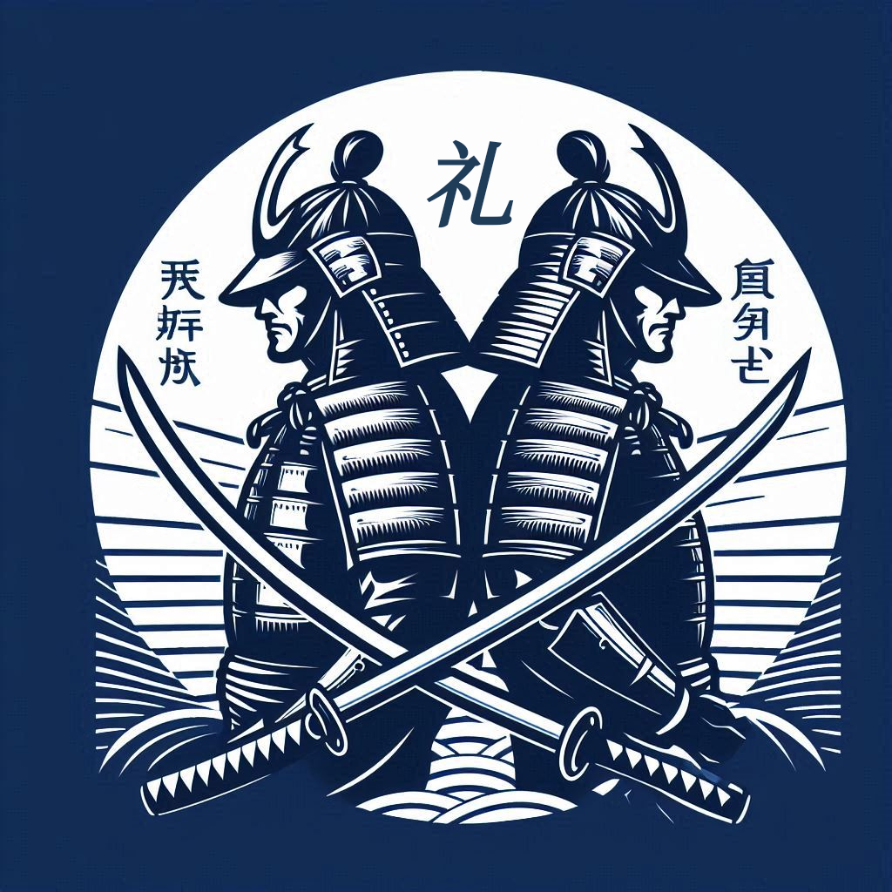
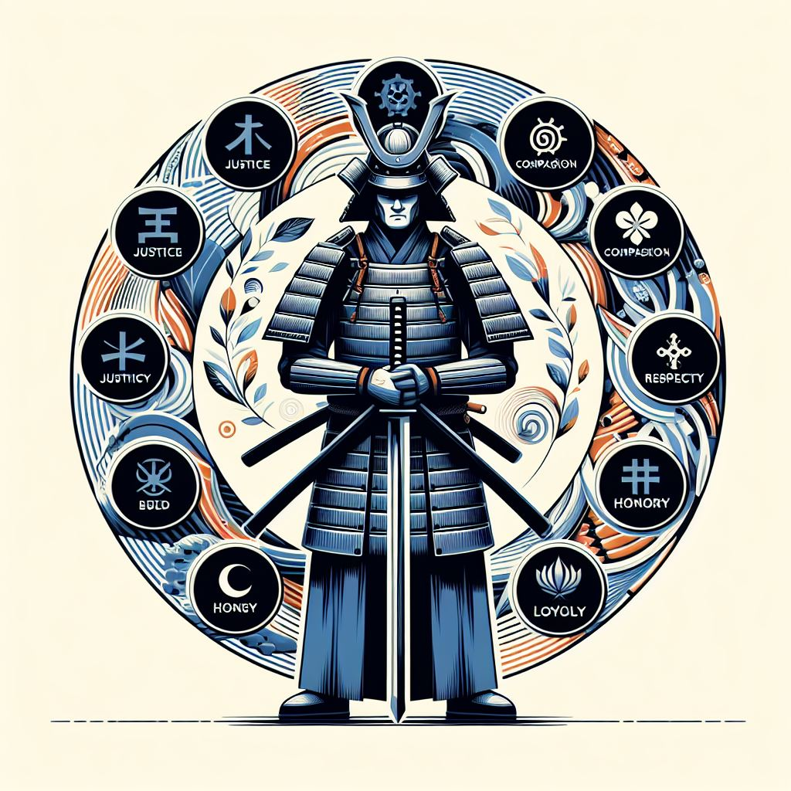
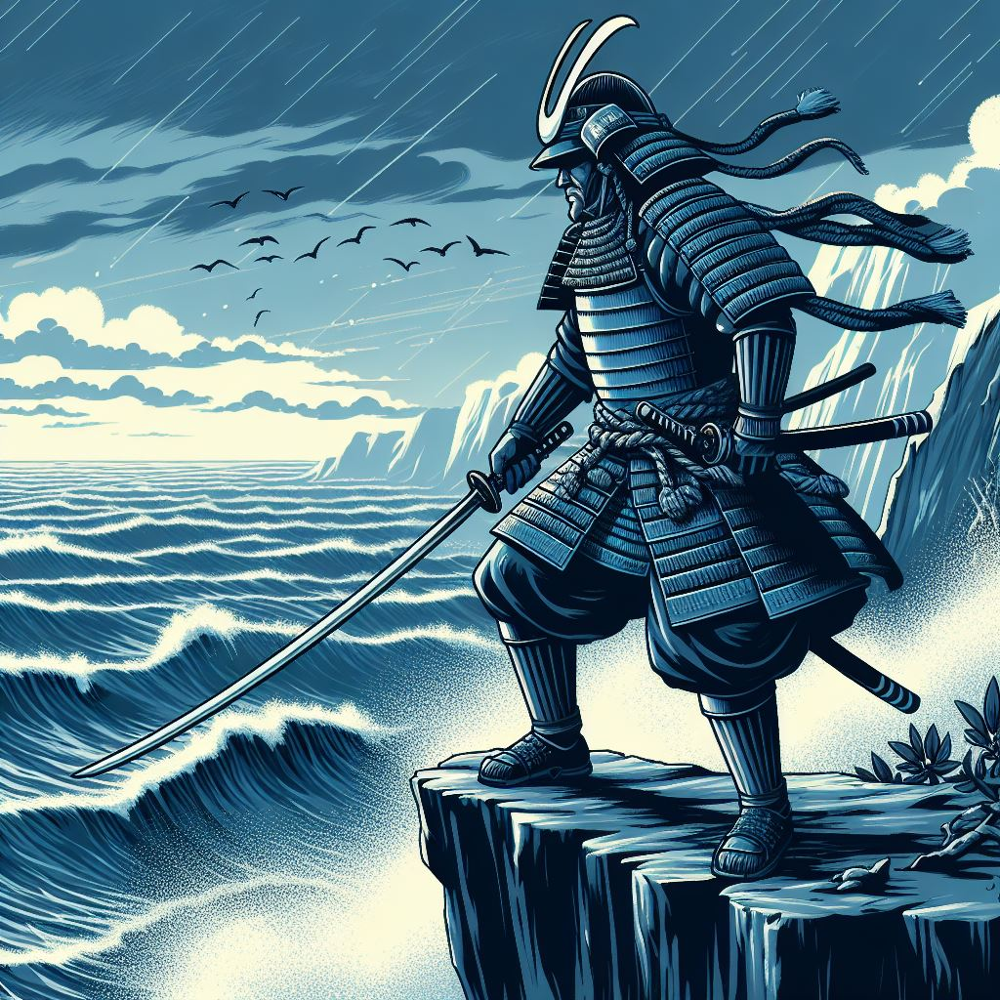
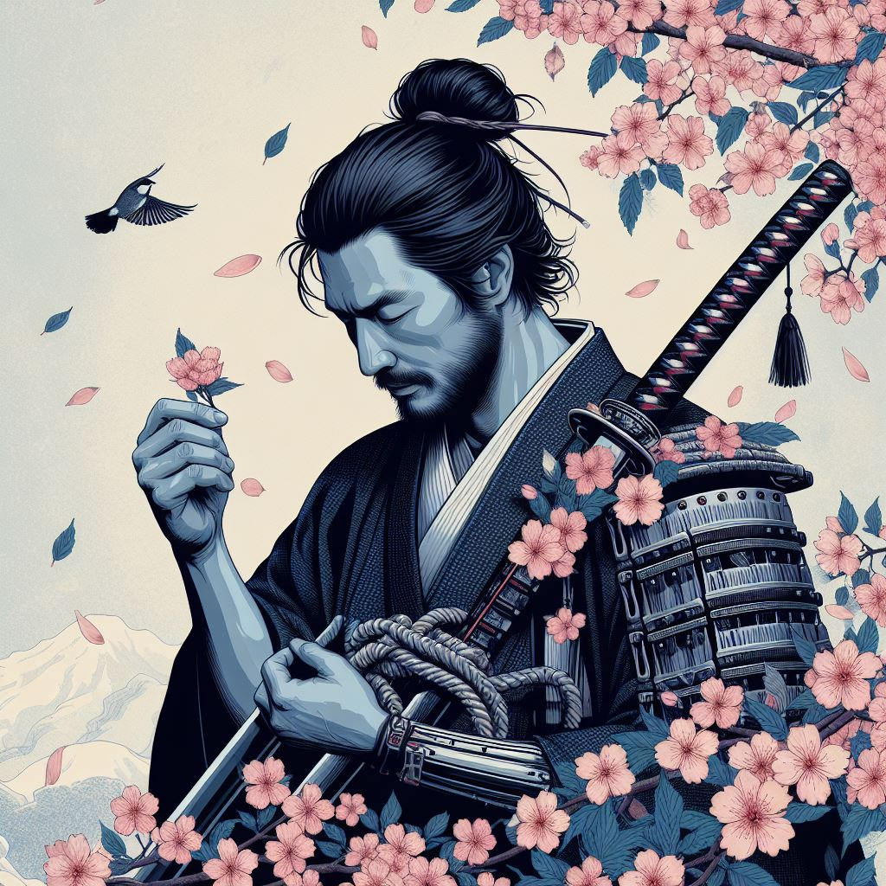
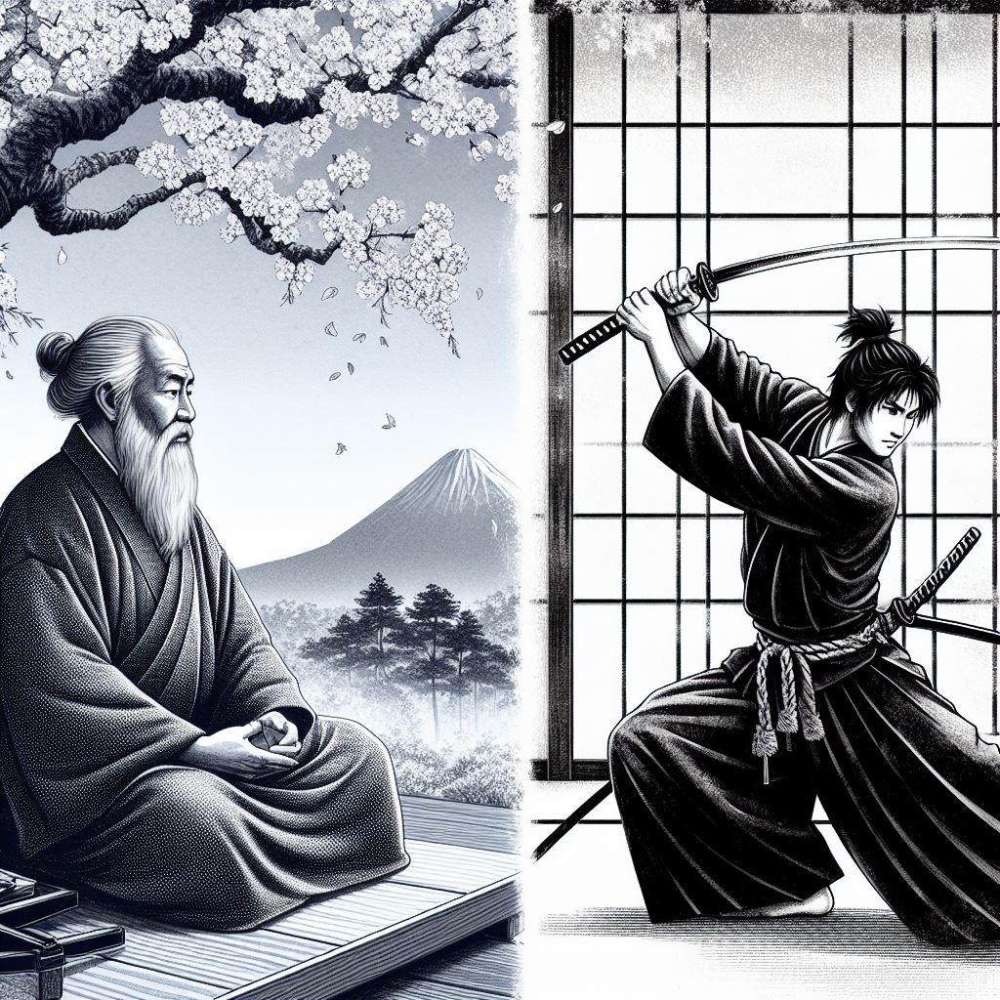
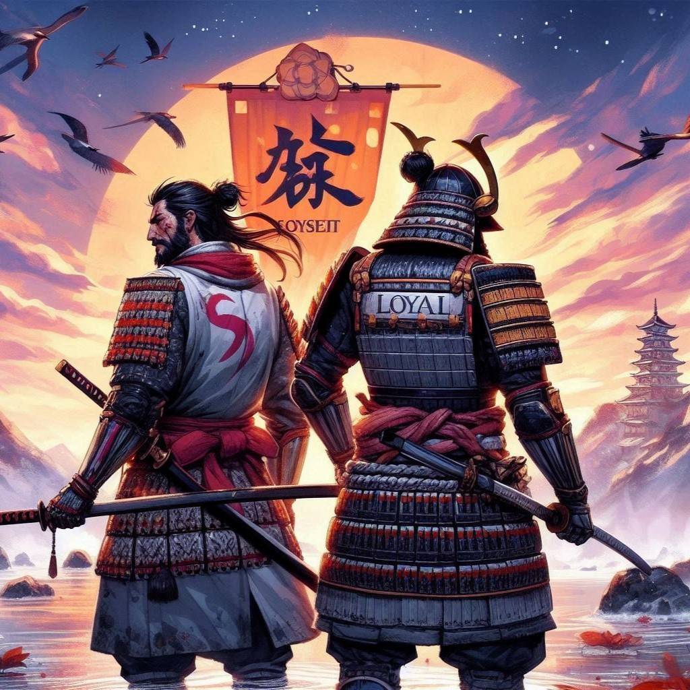

Meiyo, uma das virtudes do Bushido, o código de conduta dos samurais japoneses, significa “honra” e para os samurais, a honra era inegociável e baseada em princípios morais.
Atualizados 3 minutos atrás

礼 Rei (Respeito)
Rei, a virtude do Bushido, representa o respeito, a cortesia e a polidez e para os samurais, a crueldade e a falta de respeito eram consideradas como grandes falhas.
Atualizados 3 minutos atrás

義 Gi (Integridade/Justiça)
Gi, é a virtude do Bushido que representa a Justiça, a retidão e a honestidade Essa virtude enfatiza a importância de tomar decisões corretas e agir com retidão e honestidade.
Atualizados 3 minutos atrás

勇 Yuu (Coragem)
A virtude “Yuu” (勇) é uma parte essencial do código de conduta samurai conhecido como Bushido. Ela representa a coragem, bravura e a determinação de um samurai.
Atualizados 3 minutos atrás

诚 Makoto (Honestidade/Sinceridade)
A virtude “Makoto” (誠) é outra importante parte do Bushido. Ela se traduz como “sinceridade” ou “honestidade”. Os samurais acreditavam que a verdadeira força vinha da integridade e da honestidade.
Atualizados 3 minutos atrás

仁 Jin (Compaixão/Benevolência)
A virtude Jin(仁) é essencial para o Bushido, ela tem como o seu significado principal "Compaixão" e "Benevolencia" e ela lembrava os samurais que a força não deveria ser utilizada somente para fins egoistas.
Atualizados 3 minutos atrás

忠 Chuu (Dever/Lealdade)
A virtude Chuu(忠) do bushido, representa a "Lealdade" e o "Dever", essa virtude é essencial para a vida de um samurai pois ela enfatiza a importância de ser fiel e dedicado àqueles sob a sua responsabilidade.